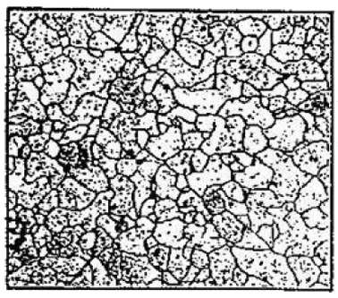
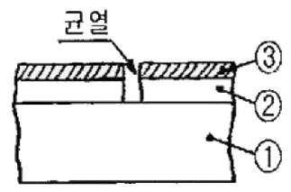
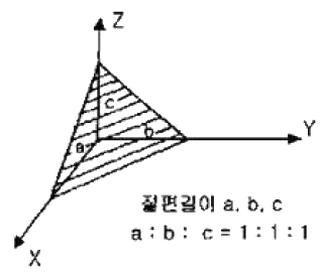
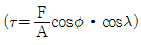
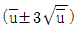
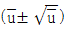
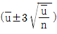
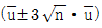
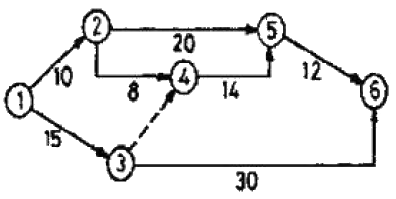

금속재료기능장 (2007-04-01 기출문제)
1과목: 임의 구분
1. 자분탐상법 중 시험체표면 2정에만 전류를 흐르게하여 대형품의 부분탐상 또는 복잡한 형상의 탐상에 적합하나 압착을 충분히 하지 않으면 스카크를 일으켜 시험품에 손사을 줄 수도 있는 탐상방법은?
- 코일법
- 자속관통법
- 축 통전법
- 프로드법
(정답률: 91%)

2. X-선 튜브의 관전압을 높이면 어떻게 되는가?
- X-선의 파장은 길어지고 투과력은 증가한다.
- X-선의 파장은 짧아지고 투과력은 증가한다.
- X-선의 파장은 짧아지고 투과력은 저하한다.
- X-선의 파장은 길어지고 투과력은 저하한다.
(정답률: 89%)
3. 금속의 변태점 측정방법이 아닌 것은?
- 열 분석법
- 전류 측정법
- 전기 저항법
- 열 팽창법
(정답률: 92%)
4. 다음 중 강을 담금질했을 때 용적변화가 가장 큰 조직은?
- 마텐자이트
- 펄라이드
- 오스테나이트
- 투루스타이트
(정답률: 74%)
5. 철 표면에 알루미늄(Al)을 침투싴키는 방법은?
- 세라다이징
- 칼로라이징
- 보로나이징
- 크로마이징
(정답률: 89%)
6. 다음 사진은 현미경을 통하여 얻은 조직사진이다. 조직명은 무엇인가? (단, 0.02%C로 고온으로 강열해서 담금질해도 경화되지 않으며, α-Fe 이다.)

- 펄라이트조직
- 페라이트조직
- 스테인리스강조직
- 시멘타이트조직
(정답률: 95%)
7. 강철의 결정입도번호(ASTM grain size No)가 7일 경우 100배의 배율에서 1평방입지당 현미경 사진 내에 들어있는 결정 입자수는?
- 8
- 16
- 64
- 82
(정답률: 87%)
8. 가스질화법에 의하여 질소(N)를 강 중에 확산시킨 질화강의 성질을 설명한 것 중 옳은 것은?
- 질화온도가 높으면 질화깊이는 커지나 경도는 낮아진다.
- 질화한 것은 인장강도, 항복점이 낮아진다.
- 연신, 단면수축율, 충격치는 높아진다.
- 피로한도는 저하한다.
(정답률: 59%)
9. 다음 중 철강 부식액으로 옳은 것은?
- 수산화나트륨 용액
- 질산 용액
- 피크랄 용액
- 염산 용액
(정답률: 58%)
10. 다음 중 와전류탐상시험에 대한 설명으로 옳은 것은?
- 형상이 복잡하여도 적용이 용이하다.
- 내부의 깊은 위치에 있는 결함도 검출이 용이하다.
- 비접촉식 방법으로 시험속도가 빠르다.
- 재료적 요인에 의해 잡음이 전혀 발생되지 않는다.
(정답률: 89%)
11. 다음 중 강자성체에 속하지 않는 것은?
- Cr
- Fe
- Ni
- Co
(정답률: 77%)
12. 황동의 기계적 성질 중 인장강도가 최대가 되는 Zn 함유량은?
- 30%
- 40%
- 50%
- 60%
(정답률: 82%)
13. 그림은 KS B 0816 에 의한 침투탐상시험용 B형 비교시험편의 단면확대 그림이다. ①-②-③을 옳게 나타낸 것은?

- ①알루미늄합금판-②니켈도금층-③크롬도금층
- ①알루미늄합금판-②크롬도금층-③니켈도금층
- ①동합금판-②니켈도금층-③크롬도금층
- ①동합금판-②크롬도금층-③니켈도금층
(정답률: 67%)
14. 다음 중 금속판재의 연성을 알기 위한 시험방법은?
- 충격 시험
- 연장 시험
- 에릭선 시험
- 스프링 시험
(정답률: 85%)
15. 선랑당량은 단위로 Sv(Sievrt)를 사용한다. 1 Sv는 몇 rem인가?
- 1
- 10
- 100
- 1000
(정답률: 71%)
16. 담금질 작업시 냉각단계의 순서로 옳은 것은?
- 대류단계→비등단계→증기막단계
- 증기막단계→비등단계→대류단계
- 비등단계→증기막단계→대류단계
- 대류단계→증기막단계→비등단계
(정답률: 91%)
17. 다음 중 설퍼 프린트(Sulphur print)검사란?
- 철강 재료 중의 산화망간(MnO)의 분포상태를 알아보는 검사법
- 철강 재료 중의 황의 편석 및 그 분포상태를 알아보는 검사법
- 구리 및 알루미늄 결정조직 상태를 알아보는 검사법
- 구리 및 알루미늄 합금에서의 입간부식이나 방향성을 알아보는 검사법
(정답률: 85%)
18. 다음 결정계 중 정방정계(Tetragonal system)는?
- a=b=c, α=β=γ=90°
- a=b≠c, α=β=γ=90°
- a≠b≠c, α=β=γ=90°
- a≠b≠c, α≠β≠γ≠90°
(정답률: 75%)
19. 합금강 열처리시 뜨임취성을 방지하기 위해 첨가되는 원소로 가장 효과적인 것은?
- Cr
- Ni
- Mo
- V
(정답률: 83%)
20. Fe-C 평형 상태도에서 Curie Point 란?
- A2자기 변태선이며, 약 768℃이다.
- A3시멘타이트의 자기변태선이며, 약 210℃이다.
- A4차기 변태선이며, 약 723℃이다.
- A5변태선이며, 약 910℃이다.
(정답률: 75%)
2과목: 임의 구분
21. 침탄 담금질의 결함으로 박리가 생기는 원인을 설명한 것 중 틀린 것은?
- 원재료가 너무 연할 때
- 확산풀림을 할 때
- 반복 침탄을 할 때
- 과잉 침탄이 생겨 고부적으로 탄소 함유량이 너무 많을 때
(정답률: 69%)
22. 담금질시 급냉으로 인한 변형의 원인으로 틀린 것은?
- 냉각의 불균일
- 조직의 표준화
- 열응력과 변태응력의 중복
- 잔류응력의 발생
(정답률: 79%)
23. 유압펌프 중 용적형 펌프가 아닌 것은?
- 기어펌프
- 피스톤펌프
- 베인펌프
- 원심펌프
(정답률: 67%)
24. 다음 중 방사선투과검사에서 사용되지 않는 것은?
- 투과도계
- 탐촉사
- 증감자
- 납 지폐체
(정답률: 82%)
25. 인공시효의 경우 시효의 진행에 따라서 한번 최고 값에 이른 경도가 다시 저하하여 오히려 연화하는 것은?
- 상온시효
- 시효경화
- 과시효
- 저온시효
(정답률: 90%)
26. 그림에서 빗금친 면의 밀러지수(miller indices)는?

- (100)
- (010)
- (001)
- (111)
(정답률: 95%)
27. 합금 재료의 응고과정에서 국부적인 농도차를 일으키는 현상은?
- 편정
- 편석
- 포정
- 공정
(정답률: 82%)
28. 다음 중 Al 합금을 개량처리 하여 강화시킨 합금은?
- 실루인
- 엘린바
- 콘스탄탄
- 모넬메탈
(정답률: 74%)
29. 다음 중 감전방지의 유의사항으로 틀린 것은?
- 전격 방지기를 사용하지 말 것
- 신체, 의복 등에 물기가 없도록 할 것
- 홀더, 케이블, 용접기의 절연과 접속을 완전히 할 것
- 절연이 좋은 장갑과 신발 및 작업복을 사용할 것
(정답률: 86%)
30. 870℃에서 4시간 동안 가스침탄을 할 경우 이론상 침탄 깊이는 약 몇 mm인가? (단, 870℃에서 온도에 따른 확산정수 값은 0.457이다.)
- 0.642
- 0.763
- 0.812
- 0.914
(정답률: 73%)
31. 컴퓨터를 이용한 자동제도 방식을 뜻하는 것은?
- CAM
- NC
- CNC
- CAD
(정답률: 95%)
32. 문츠 메탈(Muntz metal)에 주석(Sn)을 소량 첨가한 합금으로 용접봉, 밸브 등으로 사용하는 합금은?
- 에드밀러트 포금(Admiralty gun metal)
- 라우팅(Lautal)
- 네이벌 브라스(Naval brass)
- 레드 브라스(Red brass)
(정답률: 91%)
33. 초음파탐상시험에서 용접선에 대하여 초음파 빔의 방향을 변화시키기 위하여 탐촉자의 입사점을 중심으로 탐촉자를 회전시키는 주사방법은?
- 지그재그 주사법
- 목돌림 주사법
- 경사 평행 주사법
- 직선 주사법
(정답률: 87%)
34. 다음 중 로크웰 경도시험에서 사용되는 다이아몬드 압입지의 원추각 각도로 옳은 것은?
- 110°
- 120°
- 136°
- 146°
(정답률: 71%)
35. 인장시험편의 반지름 5mm, 표정거리 50mm, 최대하중이 1570kgf일 때 이 재료의 인장강도는 약 몇 kgf/mm2인가?
- 10
- 15
- 20
- 30
(정답률: 79%)
36. 침투탐상검사의 일반적인 검사 절차로 옳은 것은?
- 전처리→유화→침투→세척→현상→관찰→후처리→건조
- 전처리→침투→유화→세척→건조→현상→관찰→후처리
- 전처리→현상→후처리→세척→유화→건조→관찰→침투
- 전처리→건조→유화→관찰→현상→침투→세척→후처리
(정답률: 87%)
37. 다음 중 탈산의 정도에 따라 분류되는 강의 종류가 아닌 것은?
- 킬드강
- 캐프트강
- 림드강
- 세미림드강
(정답률: 66%)
38. 다음 중 Ni-Fe 합금이 아닌 것은?
- 니칼로이
- 퍼말로이
- 플래티니아트
- 켈멧
(정답률: 69%)
39. 오스템퍼링(Austempering) 처리에서 얻어지는 조직명은?
- 소르바이트
- 투루스타이트
- 베이나이트
- 마텐자이트
(정답률: 58%)
40. “임계전단응력

”에서 Schmid 인자는?- cosø·cosλ
- F/A
- F
- A
(정답률: 95%)
3과목: 임의 구분
41. 탄소강의 원소 중 고스트 라인(Ghost line)이라 하며 강재파괴의 원인이 되고 상온취성을 일으키는 원소는?
- Si
- P
- Mn
- S
(정답률: 88%)
42. 방사선 측정용 기구 중 피폭선량 측정 기구로 틀린 것은?
- Film badge
- Pocket dosimctor
- Muffle tester
- Survey meter
(정답률: 73%)
43. 스텔라이트(Stellite) 합금을 설명한 것 중 틀린 것은?
- Co-Ir-Zn-Cr계 단조합금으로서 성분은 40∼67%Co, 20∼27%Ir, 0∼20%Zn, 1.5∼2⑤%Cr, 0.5∼1%C로 구성된다.
- 미국의 Haynes stellite사가 절삭공구용으로 개발한 것으로서 경도는 주조한 그대로가 HRC 약 60∼64이다.
- 형다이 등에 사용되는 외에 자동차엔진용 배기 밸브의 용착봉, 일반 밸브류의 Seat 부위에 이용된다.
- Cr 함량이 많아서 고온부식에 강하고 내열피로성, 부식등 사용조건이 가혹한 부품에 사용된다.
(정답률: 83%)
44. 구상화처리 후에 나타나는 페이딩(fading)현상이란?
- 용탕의 방치시간이 길어지면 흑연의 구상화 효과가 현전하게 많이 나타나는 현상
- 용탕의 방치시간이 길어지면 흑연의 구상화 효과가 없어지는 현상
- 흑연의 형상을 더욱 구상으로 만들기 위한 현상
- 흑연의 형상을 판상으로 만들기 위한 현상
(정답률: 87%)
45. 쾌삭강(free cutting steel)에서 피삭성을 향상시키는데 가장 효과적인 원소는?
- Zn
- Pb
- Si
- Sn
(정답률: 88%)
46. 방사선투과시험에 사용되는 계조계의 용도는?
- 투과사진의 두께 측정
- 필름의 밀도 측정
- 투과사진의 농도 측정
- 광원에 대한 불선명도 측정
(정답률: 64%)
47. 로기에 이용되는 흡열형 변성가스의 설명으로 틀린 것은?
- 니켈촉매를 통해 원료가스에 공기를 가하여 열 또는 산화분해한 가스이다.
- 흡열형 변성가스에는 DX, NX, HNX 등이 있다.
- 원료가스에는 공기가 많으면 탄산가스와 수증기가 많게 된다.
- 원료가스에 공기가 부족하면 그을음을 만들어 촉매작용을 방해한다.
(정답률: 82%)
48. 베르누이(bernoulli)의 정리에서 V2/2g의 합은? (단, V는 유체의 속도, g는 중력가속도이다.)
- 속도수두
- 입력수두
- 위치수두
- 전수두
(정답률: 67%)
49. 열처리시 염욕제가 갖추어야 할 조건으로 틀린 것은?
- 유동성이 좋고 피막이 열처리 후 용이하게 떨어져야 한다.
- 용해가 용이해야 한다.
- 흡습성이 커야 한다.
- 유해가스 발생량이 적어야 한다.
(정답률: 87%)
50. 주철의 성질을 설명한 것 중 틀린 것은?
- 수축: 수축에 의해 내부 응력이 생기고 이 때문에 균열과 수축 구멍 등의 결함이 생긴다.
- 피식성: 흑연의 윤활작용과 절삭 칩이 쉽게 파쇄되어 주철의 절식성은 좋으며, 절삭유를 사용하지 않는다.
- 유동성: 주철은 C, Si, P, Mn 등의 함유량이 많을수록 유동성이 좋아지나 S는 유동성을 나쁘게 한다.
- 내열성: 상온에서 400℃까지는 내열성을 가지지 못하나 400℃ 이상에서는 내열성이 좋아진다.
(정답률: 61%)
51. 다음 중 인장시험기의 물림부의 구비조건으로 틀린 것은?
- 시험 중 시험편은 시험기 작동 중심선상에 있어야 한다.
- 인장하중과 편심하중이 가해져야 한다.
- 취급이 편리해야 한다.
- 시험편에 심한 변형을 주어서는 안된다.
(정답률: 88%)
52. 다음 중 강의 경화능을 측정하는 시험법은?
- 조미니 시험법
- X-RAY 시험법
- 크리프 시험법
- 커핑 시험법
(정답률: 89%)
53. 스테다이트(steadite)의 3원 공정조직 성분으로 틀린 것은?
- Fe3P
- Fe3C
- α-Fe
- Pearlite
(정답률: 64%)
54. 양백(german silver, nickel silver)은 어떤 합금 원소로 되어 있는가?
- Cu-Al-Mg
- Cu-Ni-Sn
- Cu-Mg-Zn
- Cu-Zn-Ni
(정답률: 64%)
55. 모집단을 몇 개의 층으로 나누고 각 층으로부터 각각 랜덤하게 시료를 뽑는 샘플링 방법은?
- 층별 샘플링
- 2단계 샘플링
- 계통 샘플링
- 단순 샘플링
(정답률: 85%)
56. 다음 중 관리의 사이클을 가장 올바르게 표시한 것은? (단, A: 조처, C: 검토, D: 실행, P: 계획)
- P→C→A→D
- P→A→C→D
- A→D→C→P
- P→D→C→A
(정답률: 87%)
57. 작업자가 장소를 이동하면서 작업을 수행하는 경우에 그 과정을 가공, 검사, 운반, 저장 등의 기호를 사용하여 분석하는 것을 무엇이라 하는가?
- 작업자 연합작업분석
- 작업자 동작분석
- 작업자 미세분석
- 작업자 공정분석
(정답률: 82%)
58. 다음 중 절차계획에서 다루어지는 주요한 내용으로 가장 관계가 먼 것은?
- 각 작업의 소요시간
- 각 작업의 실시 순서
- 각 작업에 필요한 기계와 공구
- 각 작업의 부하와 능력의 조정
(정답률: 83%)
59. U관리도의 관리상한선과 관리하한선을 구하는 식으로 옳은 것은?




(정답률: 85%)
60. 그림과 같은 계획공정도(Network)에서 주공종으로 옳은 것은? (단, 화살표 밑의 숫자는 활동시간[단위:주]을 나타낸다.)

- ①-②-⑤-⑥
- ①-②-④-⑤-⑥
- ①-③-④-⑤-⑥
- ①-③-⑥
(정답률: 90%)